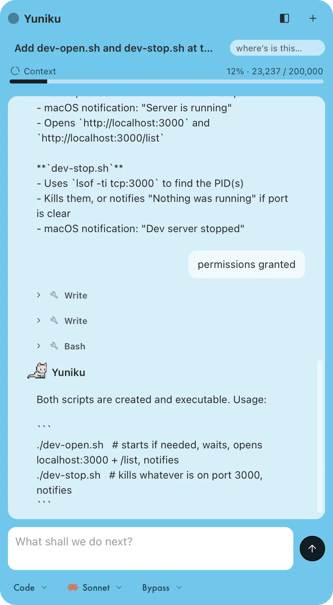

Studio AI
V.0.3
I made my own UI for Claude Code. I put cute animated animal sprites, custom set per project. It has tabs, which the Claude desktop app doesn't have.
It doesn't quite work well enough for me to use it reliably yet. But it was fun and satisfying to get this far in a day.